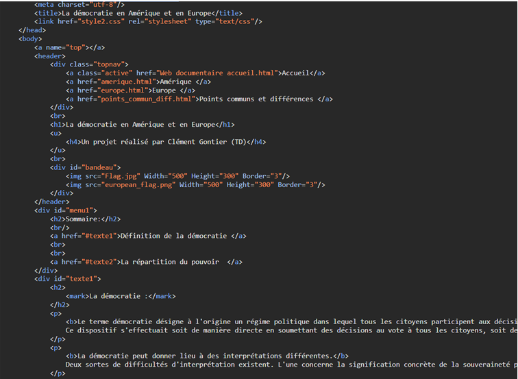
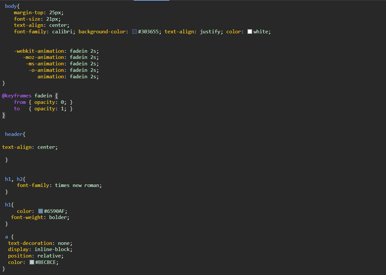

Extrait de la page d’accueil du site

Extrait du code HTML

Extrait du code CSS
Ce projet m'a permis de développer mes compétences en HTML et en CSS ainsi que d'exercer ces dernières de manière concrète.
Extrait de la page d’accueil du site

Extrait du code HTML

Extrait du code CSS